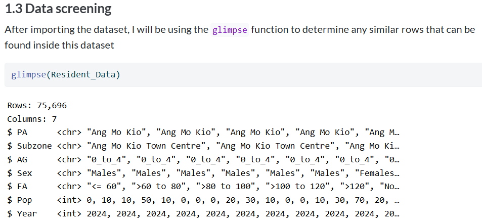
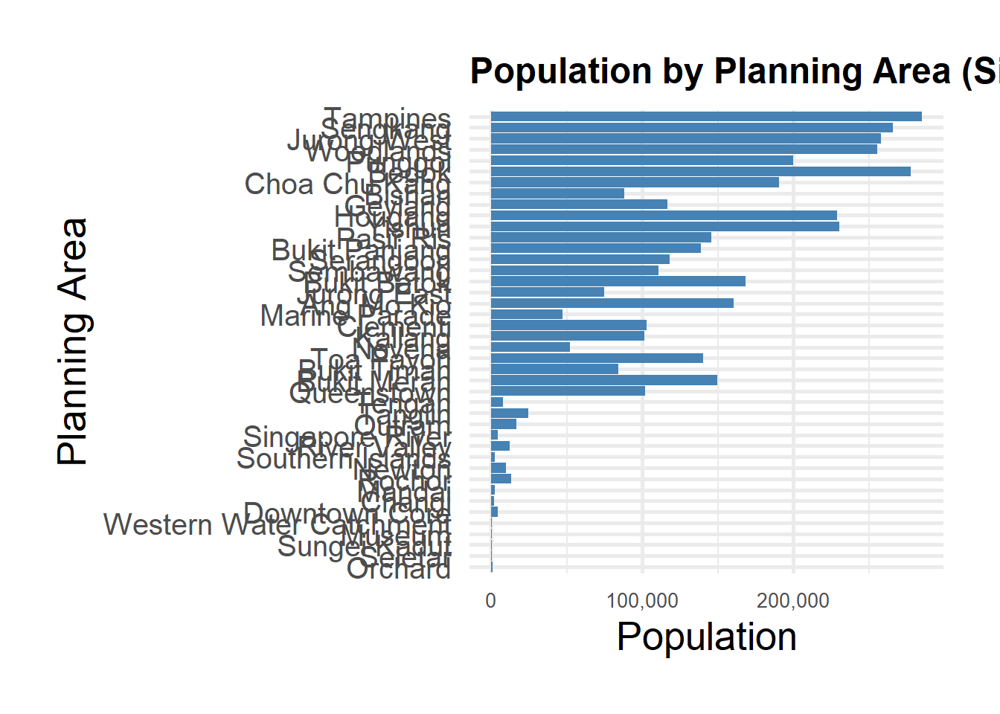
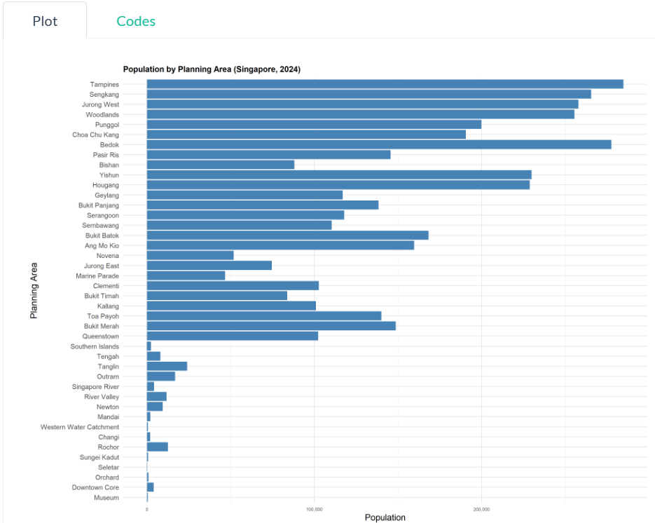
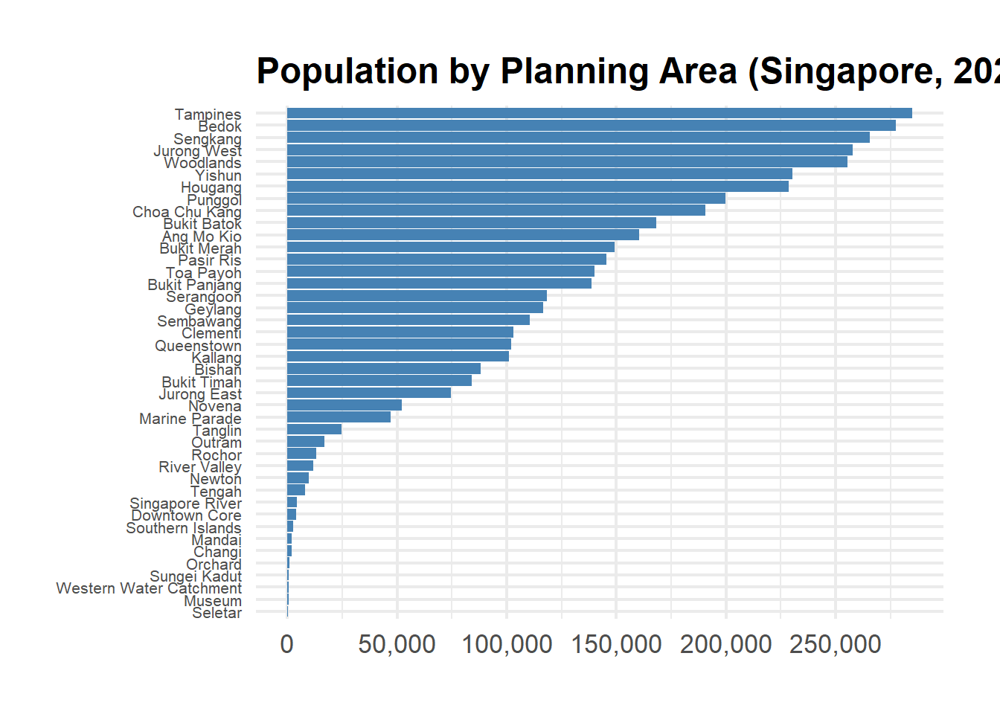
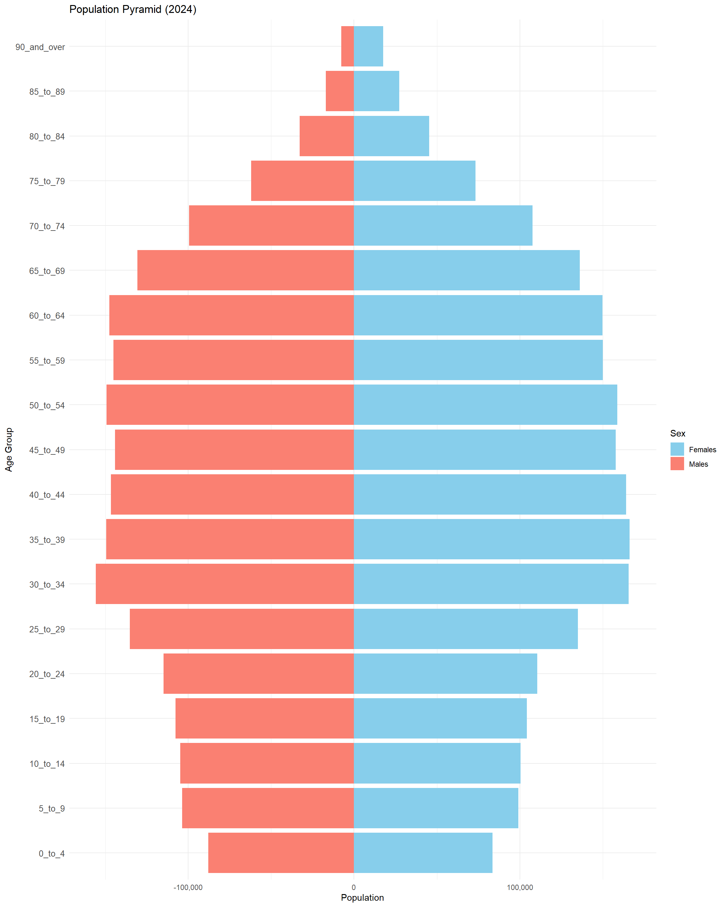
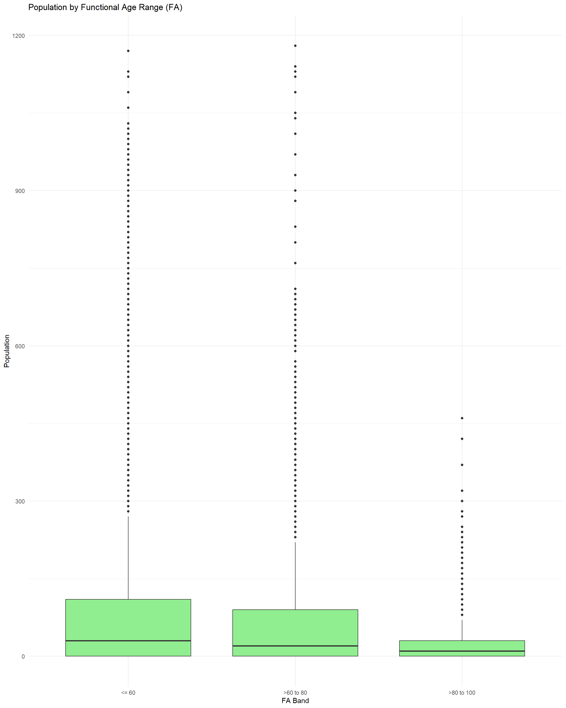
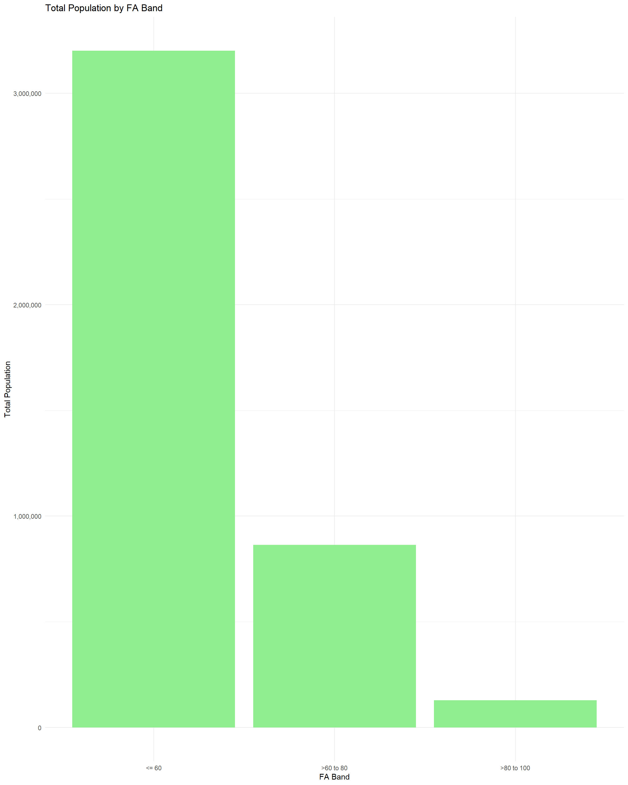
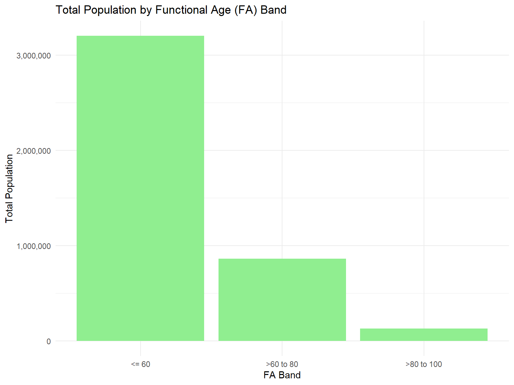

library("pacman")
suppressWarnings(library("lubridate"))
library(readr)Take-home Exercise 1b: Data Visualisation Makeover
1 Introduction
1.1 Overview
Under Take-home Exercise 1b, we are required to select one submission from our classmate for Take-home Exercise 1 to critic 3 good design principles and 3 areas for further improvements. With reference to the comments, we will provide a makeover of the data visualisation.
1.2 Framework for Gauging Data Visualisation
Under the article published by Ben Jones, he shared the following framework to gauge the objective and subjective merits of a data visualisation. It will be used to review my classmate’s submission (see link to original page).The submission was selected as the charts can be classified into the Quadrant II, III and IV:
Quadrant I = [clear, beautiful]
Quadrant II = [clear, ugly]
Quadrant III = [confusing, ugly]
Quadrant IV = [confusing, beautiful]

2 Critique
2.1 Loading of libraries and data pre-processing based on classmate’s codes
pacman::p_load(tidyverse, readxl,
janitor, lubridate,
ggplot2, ggthemes,
scales, ggridges,
ggdist, patchwork)Resident_Data <- read.csv("data/Resident_Data.csv")glimpse(Resident_Data)Rows: 60,424
Columns: 6
$ PA <chr> "Ang Mo Kio", "Ang Mo Kio", "Ang Mo Kio", "Ang Mo Kio", "Ang Mo K…
$ SZ <chr> "Ang Mo Kio Town Centre", "Ang Mo Kio Town Centre", "Ang Mo Kio T…
$ Age <chr> "0", "0", "1", "1", "2", "2", "3", "3", "4", "4", "5", "5", "6", …
$ Sex <chr> "Males", "Females", "Males", "Females", "Males", "Females", "Male…
$ Pop <int> 10, 10, 10, 10, 10, 10, 10, 10, 30, 10, 20, 10, 20, 30, 30, 10, 3…
$ Time <int> 2024, 2024, 2024, 2024, 2024, 2024, 2024, 2024, 2024, 2024, 2024,…Resident_Data[duplicated(Resident_Data),][1] PA SZ Age Sex Pop Time
<0 rows> (or 0-length row.names)Note that my classmate has renamed SZ to Subzone and created two additional columns AG (Age Group) and FA (Functional Age) as shown in my classmate’s website (see extract in the Figure below). To ensure that the charts are reproducible, the data pre-processing steps and codes should be spelt out.
Figure 1: Extracts from classmate’s website 
2.2 Bar chart based on Population Area
2.2.1 Original Chart
The original chart is reproduced below using the codes provided by my classmate.
filtered_data <- Resident_Data[!is.na(Resident_Data$Pop) & Resident_Data$Pop > 0, ]
ggplot(data = filtered_data, aes(x = reorder(`PA`, Pop), y = Pop)) +
geom_bar(stat = "identity", fill = "steelblue") +
coord_flip() +
labs(
title = "Population by Planning Area (Singapore, 2024)",
x = "Planning Area",
y = "Population"
) +
scale_y_continuous(labels = comma) +
theme_minimal(base_size = 20) + # Increase base font size
theme(
plot.title = element_text(size = 18, face = "bold"),
axis.text.y = element_text(size = 15),
axis.text.x = element_text(size = 10),
plot.margin = margin(1, 1, 1, 1, "cm") # Add breathing space
)
However, the chart produced did not look like the one published on my classmate’s website:
Figure 2: Extracts from classmate’s website 
Good Design Principles
The bar chart summarised the population numbers for all PAs in Singapore.
It also has a well-labelled x-axis scale.
It uses gridlines that are greyed-out which helps with the visual mapping to the x-axis.
Areas of Improvements
However, the chart can be classified under Quadrant II = [clear, ugly].
To improve the chart, it is recommended to:
Sort bar chart by population numbers
Remove x-axis and y-axis label since the information is found in the chart title.
Adjust size of the x-axis numbers and add more intervals for the ticks
Adjust size of the title
Remove plot margins to allow chart to be bigger
2.2.2 Makeover of Original Chart
filtered_data <- Resident_Data %>%
filter(!is.na(Pop) & Pop > 0) %>%
group_by(PA) %>%
summarise(Pop = sum(Pop), .groups = "drop")
ggplot(data = filtered_data, aes(x = reorder(PA, Pop), y = Pop)) +
geom_bar(stat = "identity", fill = "steelblue") +
coord_flip() +
labs(
title = "Population Numbers by Planning Areas (Singapore, 2024)",
x = NULL,
y = NULL
) +
scale_y_continuous(breaks = c(0, 50000, 100000, 150000, 200000, 250000, 300000), labels = comma) +
theme_minimal(base_size = 16) +
theme(
plot.title = element_text(size = 12, face = "bold"),
axis.text.y = element_text(size = 8),
axis.text.x = element_text(size = 8)
)
2.3 Pyramid Bar chart based on Population Area
2.3.1 Original Chart
The attempt to reproduce the original chart using the code below has failed:
pyramid_data \<- aggregate(Pop \~ `AG` + Sex, data = Resident_Data, sum)
age_order \<- c("0_to_4", "5_to_9", "10_to_14", "15_to_19", "20_to_24", "25_to_29", "30_to_34", "35_to_39", "40_to_44", "45_to_49", "50_to_54", "55_to_59", "60_to_64", "65_to_69", "70_to_74", "75_to_79", "80_to_84", "85_to_89", "90_and_over")
pyramid_data$AG <- factor(pyramid_data$AG, levels = age_order)
pyramid_data$Pop[pyramid_data$Sex == "Males"\] \<- -pyramid_data$Pop[pyramid_data$Sex == "Males"\]
ggplot(data = pyramid_data, aes(x = AG, y = Pop, fill = Sex)) + geom_bar(stat = "identity") + coord_flip() + labs(title = "Population Pyramid (2024)", x = "Age Group", y = "Population") + scale_y_continuous(labels = comma) + scale_fill_manual(values = c("skyblue", "salmon")) + theme_minimal() + theme(axis.text.y = element_text(size = 10))A check was done on the column names.
colnames(Resident_Data)[1] "PA" "SZ" "Age" "Sex" "Pop" "Time"There was an error as the original data does not have AG (or Age Group) but AG was cited in the codes above.
To rectify, the following codes for AG column were inserted
Resident_Data <- Resident_Data %>%
mutate(
Age = recode(Age, "90_and_Over" = "90"),
Age = as.numeric(Age),
Pop = as.numeric(Pop)
) Resident_Data <- Resident_Data %>%
mutate(
AG = case_when(
Age >= 0 & Age <= 4 ~ "0_to_4",
Age >= 5 & Age <= 9 ~ "5_to_9",
Age >= 10 & Age <= 14 ~ "10_to_14",
Age >= 15 & Age <= 19 ~ "15_to_19",
Age >= 20 & Age <= 24 ~ "20_to_24",
Age >= 25 & Age <= 29 ~ "25_to_29",
Age >= 30 & Age <= 34 ~ "30_to_34",
Age >= 35 & Age <= 39 ~ "35_to_39",
Age >= 40 & Age <= 44 ~ "40_to_44",
Age >= 45 & Age <= 49 ~ "45_to_49",
Age >= 50 & Age <= 54 ~ "50_to_54",
Age >= 55 & Age <= 59 ~ "55_to_59",
Age >= 60 & Age <= 64 ~ "60_to_64",
Age >= 65 & Age <= 69 ~ "65_to_69",
Age >= 70 & Age <= 74 ~ "70_to_74",
Age >= 75 & Age <= 79 ~ "75_to_79",
Age >= 80 & Age <= 84 ~ "80_to_84",
Age >= 85 & Age <= 89 ~ "85_to_89",
Age >= 90 ~ "90_and_over",
TRUE ~ NA_character_
)
)The orignal code can now be reproduced:
pyramid_data <- aggregate(Pop ~ `AG` + Sex, data = Resident_Data, sum)
age_order <- c("0_to_4", "5_to_9", "10_to_14", "15_to_19", "20_to_24", "25_to_29",
"30_to_34", "35_to_39", "40_to_44", "45_to_49", "50_to_54", "55_to_59",
"60_to_64", "65_to_69", "70_to_74", "75_to_79", "80_to_84", "85_to_89",
"90_and_over")
pyramid_data$AG <- factor(pyramid_data$AG, levels = age_order)
pyramid_data$Pop[pyramid_data$Sex == "Males"] <- -pyramid_data$Pop[pyramid_data$Sex == "Males"]
ggplot(data = pyramid_data, aes(x = AG, y = Pop, fill = Sex)) +
geom_bar(stat = "identity") +
coord_flip() +
labs(title = "Population Pyramid (2024)", x = "Age Group", y = "Population") +
scale_y_continuous(labels = comma) +
scale_fill_manual(values = c("skyblue", "salmon")) +
theme_minimal() +
theme(axis.text.y = element_text(size = 10))
Good Design Principles
The chart is an age pyramid which illustrated the age structure of Singapore’s population well as we can immediately see that the main bulk of the population is between 30 to 69.
Instead of doing a simple bar chart where Males and Females population are both on the right, the scale of the bar chart has been adjusted to move Males to the left.
The gridlines also helps with the visual mapping to the x-axis numbers.
However, the age pyramid can be classified under Quadrant IV = [confusing, beautiful]. This is because males are coded as red and females are coded as blue. There is also a negative number in the x-axis for population.
Areas of Improvements
To improve the chart, it is recommended to:
Swop the colour code for gender
Update the scale to be positive number
Compress the chart.
2.3.2 Makeover of Original Chart
ggplot(data = pyramid_data, aes(x = AG, y = Pop, fill = Sex)) +
geom_bar(stat = "identity", width = 0.9) +
coord_flip() +
labs(title = "Population Pyramid (2024)", x = "Age Group", y = "Population") +
scale_y_continuous(labels = function(x) comma(abs(x))) +
scale_fill_manual(values = c("Males" = "skyblue", "Females" = "salmon")) +
theme_minimal() +
theme(
axis.text.y = element_text(size = 9),
axis.text.x = element_text(size = 9),
plot.title = element_text(size = 14, face = "bold"),
plot.margin = margin(10, 10, 10, 10)
)
2.4 Box Plot based on Age Range
2.4.1 Original Chart
The attempt to reproduce the original chart using the code below has failed too as there was no FA column created.
FA_order <- c("<= 60", ">60 to 80", ">80 to 100", ">100 to 120", ">120", "Not Available")
Resident_Data$FA <- factor(Resident_Data$FA, levels = FA_order)
ggplot(Resident_Data, aes(x = FA, y = Pop)) +
geom_boxplot(fill = "lightgreen") +
labs(title = "Population by Functional Age Range (FA)", x = "FA Band", y = "Population") +
theme_minimal()To rectify, it is assumed that FA refers to Functional Age binned based on Age <= 60, >60 to 80, >80 to 100, >100 to 120, >120, Not Available.
The following codes for FA column were inserted
Resident_Data <- Resident_Data %>%
mutate(
FA = case_when(
Age <= 60 ~ "<= 60",
Age > 60 & Age <= 80 ~ ">60 to 80",
Age > 80 & Age <= 100 ~ ">80 to 100",
Age > 100 & Age <= 120 ~ ">100 to 120",
Age > 120 ~ ">120",
TRUE ~ "Not Available"
)
)I have attempted to reproduce the original chart using the codes provided but was unable to do so as it is not possible to distinguish population aged “>100 to 120”, “>120” and “Not Available” since all population aged 90 and above will be classified under “>80 to 100”. Hence, I am unable to critique on the good design principles for this chart.
FA_order <- c("<= 60", ">60 to 80", ">80 to 100", ">100 to 120", ">120", "Not Available")
Resident_Data$FA <- factor(Resident_Data$FA, levels = FA_order)
ggplot(Resident_Data, aes(x = FA, y = Pop)) +
geom_boxplot(fill = "lightgreen") +
labs(title = "Population by Functional Age Range (FA)", x = "FA Band", y = "Population") +
theme_minimal()
Areas of Improvement
The chart is a box plot based on age range. However, box plots are used to show distributions of numeric continuous data values along y-axis, and compare them between multiple groups.
As mentioned earlier, the data grouping seems to be erroneous and needs corrections to the code.
Given that the population numbers are by subzones, the box plot shows large number of outliers which is not useful for storytelling.
Hence, the chart can be classified under Quadrant III = [confusing, ugly].
2.4.2 Makeover of Original Chart
If the intent is to show the total population number in the 3 age groups as per the writeup, it is recommended to use a bar graph instead as shown below. The total population numbers in each age group are added together first, followed by the plotting.
Resident_FA_summary <- Resident_Data %>%
group_by(FA) %>%
summarise(TotalPop = sum(Pop, na.rm = TRUE))
ggplot(Resident_FA_summary, aes(x = FA, y = TotalPop)) +
geom_col(fill = "lightgreen") +
labs(title = "Total Population by Functional Age (FA) Band", x = "FA Band", y = "Total Population") +
scale_y_continuous(labels = comma) +
theme_minimal()
3 References
Jones, B. (2012, May 28). Data visualization: Clarity or aesthetics? https://dataremixed.com/2012/05/data-visualization-clarity-or-aesthetics/